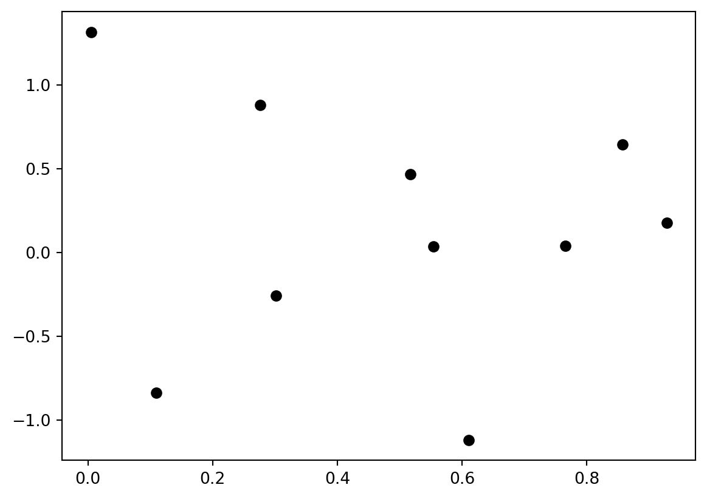

import numpy as npLecture 1: Background and Prerequisites
Linear algebra prerequisites
We will begin with a review of many of the basic concepts from linear algebra that we will need for this course. As we go through these concepts we will see how to implement them in Python.
Numpy
Numpy Is the linear algebra library that we will be using for much of this class. The standard way to import Numpy is:
The most basic object from Numpy that we will just is the array (np.array), which will represent vectors matrices and even higher-dimensional objects known as tensors.
Scalars
Scalars are just single numbers. In our math we will typically denote scalars with a lower-case letter. For example, we might call a scalar \(x\) and give it a value as \[x=3.5\] In code:
x = 3.5
# or as a 0-dimensional numpy array
x = np.array(3.5)Vectors
Vectors are ordered lists of numbers, as shown below. We will typically denote vectors with bold lower case letters, such as \(\mathbf{x}\).
\[ \mathbf{x} = \begin{bmatrix} 2\\ 5\\ 1\end{bmatrix} \]
In Numpy, we can create an array object representing a vector by passing np.array a list of numbers.
x = np.array([2, 5, 1])Entries
The individual numbers in the vector are called the entries and we will refer to them individually as subscripted scalars: \(x_1, x_2,…,x_n\).
\[ \mathbf{x} = \begin{bmatrix} x_1\\ x_2\\ x_3\end{bmatrix} \]
In numpy we can access individual elements of a vector using [] operators (note that numpy is 0-indexed!).
x[0]np.int64(2)Vector interpretation
A vector represents either a location or a change in location in \(n\) -dimensional space.
Manim Community v0.18.1

Vectors as data
A space of vectors could represent students, with each entry corresponding to a student’s grade in a different subject:
\[ \text{Student } \mathbf{x} = \begin{bmatrix} \text{Math} \\ \text{CS} \\ \text{Literature} \\\text{History} \end{bmatrix} \]
Any two students might have different grades across the subjects. We can represent these two students (say \(\mathbf{x}_1\) and \(\mathbf{x}_2\)) as two vectors.
\[ \mathbf{x}_1 = \begin{bmatrix} 3.0 \\ 4.0 \\ 3.7 \\ 2.3 \end{bmatrix}, \quad \mathbf{x}_2 = \begin{bmatrix} 3.7 \\ 3.3 \\ 3.3 \\ 4.0 \end{bmatrix} \]
Vector equality
We say that two vectors are equal if and only if all of the corresponding elements are equal, so \[\mathbf{x} = \mathbf{y}\] implies that \[x_1=y_1, x_2=y_2…\]
Vector equality in Numpy
x = np.array([2, 5, 1])
y = np.array([3, 5, 2])
x == yarray([False, True, False])We can check if all entries are equal (and therefore the vectors are equal) using the np.all function.
np.all(x == y), np.all(x == x)(np.False_, np.True_)Other comparison operators (>,<, >=, <=, !=) also perform element-wise comparison in numpy.
Vector addition
When we add or subtract vectors, we add or subtract the corresponding elements.
\[\mathbf{x} + \mathbf{y} = \begin{bmatrix} x_1\\ x_2\\ x_3\end{bmatrix} + \begin{bmatrix} y_1\\ y_2\\ y_3\end{bmatrix} = \begin{bmatrix} x_1 + y_1\\ x_2 + y_2\\ x_3 + y_3\end{bmatrix}\] This works the same in numpy
x + yarray([ 5, 10, 3])Vector addition
Addition corresponds to shifting the point \(\mathbf{x}\) by the vector \(\mathbf{y}\).
Manim Community v0.18.1
Element-wise operations
In both mathematical notation and numpy, most operations on vectors will be assumed to be taken element-wise. That is,
\[ \mathbf{x}^2 = \begin{bmatrix} x_1^2 \\ x_2^2 \\ x_3^2 \end{bmatrix} , \quad \log(\mathbf{x}) = \begin{bmatrix} \log x_1 \\ \log x_2 \\ \log x_3 \end{bmatrix},\ \text{etc.} \]
In numpy:
x ** 2, np.log(x)(array([ 4, 25, 1]), array([0.69314718, 1.60943791, 0. ]))Note on logarithms
Note that in this class (and in numpy!) logarithms are assumed to be base \(e\), otherwise known as natural logarithms.
Scalar-vector operations
Operations between scalars and vectors are also assumed to be element-wise as in this scalar-vector multiplication
\[ a\mathbf{x} = \begin{bmatrix} a x_1 \\ a x_2 \\ a x_3 \end{bmatrix}, \quad a + \mathbf{x} = \begin{bmatrix} a + x_1 \\ a + x_2 \\ a + x_3 \end{bmatrix} \]
Vector magnitude
The magnitude of a vector its length in \(\mathbb{R}^n\), or equivalently the Euclidean distance from the origin to the point the vector represents. It is denoted as\(\|\mathbf{x}\|_2\) and defined as:
\[ \|\mathbf{x}\|_2 = \sqrt{\sum_{i=1}^n x_i^2} \]
The subscript \(2\) specifies that we are talking about Euclidean distance. Because of this we will also refer to the magnitude as the two-norm.
In numpy we can compute this using the np.linalg.norm function.
xnorm = np.linalg.norm(x)Vector magnitude
We can also compute magnitude explicitly with the np.sum function, which computes the sum of the elements of a vector.
xnorm_explicit = np.sqrt(np.sum(x ** 2))
xnorm, xnorm_explicit(np.float64(5.477225575051661), np.float64(5.477225575051661))
Other useful aggregation functions
print(np.mean(x)) # Take the mean of the elements in x
print(np.std(x)) # Take the standard deviation of the elements in x
print(np.min(x)) # Find the minimum element in x
print(np.max(x)) # Find the maximum element in x2.6666666666666665
1.699673171197595
1
5Unit vectors
A unit vector is a vector with length \(1\). We can find a unit vector that has the same direction as \(\mathbf{x}\) by dividing \(\mathbf{x}\) by it’s magnitude:
\[ \frac{\mathbf{x}}{\|\mathbf{x}\|_2} \]
x / np.linalg.norm(x)array([0.36514837, 0.91287093, 0.18257419])Dot products
The dot-product operation between two vectors is defined as
\[ \mathbf{x} \cdot \mathbf{y} = \sum_{i=1}^n x_i y_i \]
The result is a scalar whose value is equal to \(\|\mathbf{x}\|_2\|\mathbf{y}\|_2 \cos\theta\), where \(\theta\) is the angle between them.
We can compute dot products in numpy using the np.dot function
np.dot(x, y)np.int64(33)Dot products
If \(\theta=\frac{\pi}{2}\), the vectors are orthogonal and the dot product with be \(0\). If \(\theta>\frac{\pi}{2}\) or \(\theta < -\frac{\pi}{2}\) , the dot product will be negative.
If \(\theta=0\) then \(\cos(\theta)=1\). In this case we say the vectors are colinear. This formulation implies that given two vectors of fixed length, the dot product is maximized with they are colinear ( \(\theta=0\) ).
Dot products
Geometrically, \(\|\mathbf{x}\|_2\cos\theta\) is the length of the projection of \(\mathbf{x}\) onto \(\mathbf{y}\). Thus, we can compute the length of this projection using the dot-product as \(\frac{\mathbf{x}\cdot\mathbf{y}}{\|\mathbf{y}\|}\) .
Matrices
A matrix is a 2-dimensional collection of numbers. We will denote matrices using bold capital letters, e.g. \(\mathbf{A}\).
\[ \mathbf{A} = \begin{bmatrix} 3 & 5 & 4 \\ 1 & 1 & 2 \end{bmatrix} \]
In numpy we can create a matrix by passing np.array as list-of-lists, where each inner list specifies a row of the matrix.
A = np.array([[3, 5, 4], [1, 1, 2]])
Aarray([[3, 5, 4],
[1, 1, 2]])Matrix elements
As with vectors we will denote individual elements of a matrix using subscripts. In this case, each element has 2 coordinates. Conventions is to always list the row first.
\[ \mathbf{A} = \begin{bmatrix} A_{11} & A_{12} & A_{13} \\ A_{21} & A_{22} & A_{23} \end{bmatrix} \]
In numpy we can access elements in a matrix similarly.
A[1, 2]np.int64(2)As with vectors, we say that two matrices are equal if and only if all of the corresponding elements are equal.
Matrix creation in Numpy
Basic creation functions
A0 = np.zeros((3, 4)) # create a 3x4 matrix of all zeros
A1 = np.ones((4, 4)) # create a 4x4 matrix of all ones
Ainf = np.full((3, 3), np.inf) # create a 3x3 matrix of all infinities
I = np.eye(3) # create a 3x3 itentity matrixCreating a matrix by “reshaping” a vector with the same number of elements
V = np.arange(1, 13).reshape((3, 4)) # Create a 3x4 matrix with elements 1-12Creating matrices by combining matrices
B = np.tile(A0, (3, 2)) # create a matrix by "tiling" copies of A0 (3 copies by 2 copies)
B = np.concatenate([A0, A1], axis=0) # create a (2n x m) matrix by stacking two matrices vertically
B = np.concatenate([A0, I], axis=1) # create a (n x 2m) matrix by stacking two matrices horizontallySlicing matrices
Often we will refer to an entire row of a matrix (which is itself a vector) using matrix notation with a single index
\[ \mathbf{A}_i = \begin{bmatrix} A_{i1} \\ A_{i2} \\ \vdots \end{bmatrix} \]
In numpy we can access a single row similarly.
A[1]array([1, 1, 2])Slicing matrices
We can refer to an entire column by replacing the row index with a \(*\), indicating we are referring to all rows in that column.
\[ \mathbf{A}_{*i} = \begin{bmatrix} A_{1i} \\ A_{2i} \\ \vdots \end{bmatrix} \]
In numpy we can access an entire column (or row) using the slice operator :, which takes all elements along an axis.
A[:, 1] # Take all elements in column 1array([5, 1])Slicing matrices
We can also use the slice operator to take a subset of elements along an axis.
A[:, 1:3] #Take the second and third columns of Aarray([[5, 4],
[1, 2]])Advanced slicing in numpy
Open-ended slices
print("A[:2]=", A[:2]) # Take rows up to 2 (not inucluding 2)
print("A[1:]=", A[1:]) # Take rows starting at (and including) 1A[:2]= [[1 2 3 4]
[5 6 7 8]]
A[1:]= [[ 5 6 7 8]
[ 9 10 11 12]]Taking rows and colmns
print("A[0, :]=", A[0, :]) # first row, all columns
print("A[:, 1]=", A[:, 1]) # all rows, second column
print("A[-1, :]", A[-1, :]) # all columns of the last row
print("A[:, -2]", A[:, -2]) # second to last column of every rowA[0, :]= [1 2 3 4]
A[:, 1]= [ 2 6 10]
A[-1, :] [ 9 10 11 12]
A[:, -2] [ 3 7 11]Advanced slicing in numpy
More general slicing with steps
print("A[1,0:2]=", A[1,0:2])
print("A[0,0:4:2]=", A[0,0:4:2])
print("A[:,0:4:2]=\n", A[:,0:4:2])A[1,0:2]= [5 6]
A[0,0:4:2]= [1 3]
A[:,0:4:2]=
[[ 1 3]
[ 5 7]
[ 9 11]]Taking one row and selected columns
print("A[2, [1,4]]=",A[2, [0,3]])A[2, [1,4]]= [ 9 12]Taking all rows and selected columns
print("A[:, [1,4]]=\n",A[:, [0,3]])A[:, [1,4]]=
[[ 1 4]
[ 5 8]
[ 9 12]]Matrix shapes
The matrix \(\mathbf{A}\) above has 2 rows and 3 columns, thus we would specify it’s shape as \(2\times3\). A square matrix has the same number of rows and columns.
\[ \mathbf{A} = \begin{bmatrix} 3 & 5 & 4 \\ 1 & 1 & 2 \\ 4 & 1 & 3 \end{bmatrix} \]
We can access the shape of a matrix in numpy using its shape property.
A = np.array([[3, 5, 4], [1, 1, 2], [4, 1, 3]])
print(A.shape)(3, 3)Matrix transpose
The transpose of a matrix is an operation that swaps the rows and columns of the matrix. We denote the transpose of a matrix \(\mathbf{A}\) as \(\mathbf{A}^T\).
\[ \mathbf{A} = \begin{bmatrix} A_{11} & A_{12} & A_{13} \\ A_{21} & A_{22} & A_{23} \end{bmatrix}, \quad \mathbf{A}^T = \begin{bmatrix} A_{11} & A_{21} \\ A_{12} & A_{22} \\ A_{13} & A_{23} \end{bmatrix} \]
In numpy we can transpose a matrix by using the T property.
A = np.array([[1, 1, 1], [2, 2, 2]])
A.Tarray([[1, 2],
[1, 2],
[1, 2]])Element-wise matrix operations
As with vectors, many operations on matrices are performed element-wise:
\[ \mathbf{A} + \mathbf{B} = \begin{bmatrix} A_{11} + B_{11} & A_{12} + B_{12} & A_{13} + B_{13} \\ A_{21} + B_{21} & A_{22} + B_{22} & A_{23} + B_{23} \end{bmatrix}, \quad \log\mathbf{A} = \begin{bmatrix} \log A_{11} & \log A_{12} & \log A_{13} \\ \log A_{21} & \log A_{22} & \log A_{23} \end{bmatrix} \]
Scalar-matrix operation are also element-wise:
\[ c\mathbf{A} = \begin{bmatrix} cA_{11} & cA_{12} & cA_{13} \\ cA_{21} & cA_{22} & cA_{23} \end{bmatrix} \]
In numpy:
B = 5 * A
A + Barray([[ 6, 6, 6],
[12, 12, 12]])Matrix-vector products
A matrix-vector product is an operation between a matrix and a vector that produces a new vector. Given a matrix \(\mathbf{A}\) and a vector \(\mathbf{x}\), we write the matrix-vector product as:
\[ \mathbf{A}\mathbf{x} = \begin{bmatrix} A_{11} & A_{12} & A_{13} \\ A_{21} & A_{22} & A_{23} \\ A_{23} & A_{32} & A_{33} \end{bmatrix} \begin{bmatrix} x_1\\ x_2\\ x_3\end{bmatrix} = \begin{bmatrix} \sum_{i=1}^n x_i A_{1i} \\ \sum_{i=1}^n x_i A_{2i} \\ \sum_{i=1}^n x_i A_{3i} \end{bmatrix} = \begin{bmatrix} \mathbf{x}\cdot \mathbf{A}_{1} \\ \mathbf{x}\cdot \mathbf{A}_{2} \\ \mathbf{x} \cdot \mathbf{A}_{2} \end{bmatrix} \]
In other words, each entry of the resulting vector is the dot product between \(\mathbf{x}\) and a row of \(A\). In numpy we also use np.dot for matrix-vector products:
A = np.array([[3, 5, 4], [1, 1, 2], [4, 1, 3]])
x = np.array([2, 5, 1])
np.dot(A, x)array([35, 9, 16])Geometrically the matrix \(A\) defines a transformation that scales and rotates any vector \(\mathbf{x}\) about the origin.
Matrix-vector products
The number of columns of \(A\) must match the size of the vector \(\mathbf{x}\), but if \(A\) has a different number of rows, the output will simply have a different size.
np.dot(A[:2], x)array([35, 9])Matrix multiplication
Matrix multiplication is a fundamental operation between two matrices. It is defined as:
\[ \mathbf{A}\mathbf{B} = \begin{bmatrix} A_{11} & A_{12} & A_{13} \\ A_{21} & A_{22} & A_{23} \\ A_{23} & A_{32} & A_{33} \end{bmatrix} \begin{bmatrix} B_{11} & B_{12} \\ B_{21} & B_{22} \\ B_{31} & B_{32} \end{bmatrix} =\begin{bmatrix} \sum_{i=1}^n A_{1i} B_{i1} & \sum_{i=1}^n A_{i1}B_{i2} \\ \sum_{i=1}^n A_{2i}B_{i1} & \sum_{i=1}^n A_{2i}B_{i2} \\ \sum_{i=1}^n A_{3i}B_{i1} & \sum_{i=1}^n A_{3i}B_{i2} \end{bmatrix} = \begin{bmatrix} \mathbf{A}_{1} \cdot \mathbf{B}_{*1} & \mathbf{A}_{1} \cdot \mathbf{B}_{*2} \\ \mathbf{A}_{2} \cdot \mathbf{B}_{*1} & \mathbf{A}_{2} \cdot \mathbf{B}_{*2} \\ \mathbf{A}_{1} \cdot \mathbf{B}_{*1} & \mathbf{A}_{1} \cdot \mathbf{B}_{*2} \end{bmatrix} \]
This means that if we multiply an \(n\times m\) matrix \(\mathbf{A}\) with an \(m\times k\) matrix \(\mathbf{B}\) we get an \(n\times k\) matrix \(\mathbf{C}\), such that \(\mathbf{C}_{ij}\) is the dot product of the \(i\)-th row of \(\mathbf{A}\) with the \(j\)-th row of \(\mathbf{B}\).
In numpy we once again use the np.dot function to perform matrix-multiplications.
B = np.array([[2, -1], [3, 1], [-2, 5]])
C = np.dot(A, B)Matrix multiplication
The number of rows of \(\mathbf{A}\) must match the number of columns of \(\mathbf{B}\) for the matrix multiplication \(\mathbf{A}\mathbf{B}\) to be defined. This implies that matrix multiplication is non-communitive:
\[ \mathbf{A}\mathbf{B}\neq \mathbf{B}\mathbf{A} \]
However matrix multiplication is associative and distributive:
\[ \mathbf{A}(\mathbf{B}\mathbf{C})=(\mathbf{A}\mathbf{B})\mathbf{C}, \quad \mathbf{A}(\mathbf{B} +\mathbf{C}) = \mathbf{A}\mathbf{B} + \mathbf{A}\mathbf{C} \]
Matrix multiplication
Matrix multiplication is a composition of linear maps, meaning that if we take the product \(\mathbf{A}\mathbf{B}\) and apply the resulting matrix to a vector \(\mathbf{x}\), it is equivalent to first transforming \(\mathbf{x}\) with \(\mathbf{B}\) and then with \(\mathbf{A}\). We can state this succinctly as:
\[ (\mathbf{A}\mathbf{B})\mathbf{x} = \mathbf{A}(\mathbf{B}\mathbf{x}) \]
We can see this in numpy:
x = np.array([1, 3])
np.dot(np.dot(A, B), x), np.dot(A, np.dot(B, x))(array([79, 31, 41]), array([79, 31, 41]))Element-wise multiplication
It is important to note that in numpy the * operator does not perform matrix multiplication, instead it performs element-wise multiplication for both matrices and vectors.
A = np.array([[1, 1], [2, 2], [3, 3]])
B = np.array([[1, 2], [1, 2], [1, 2]])
A * Barray([[1, 2],
[2, 4],
[3, 6]])In mathematical notation we will denote element-wise multiplication as:
\[ \mathbf{A} \odot \mathbf{B} = \begin{bmatrix} A_{11} B_{11} & A_{12} B_{12} & A_{13} B_{13} \\ A_{21} B_{21} & A_{22} B_{22} & A_{23} B_{23} \end{bmatrix} \]
Matrix reductions
As we saw with vectors, we can take the sum of the elements of a matrix using the np.sum function:
np.sum(A)np.int64(12)The result is a scalar of the form:
\[ \text{sum}(\mathbf{A}) = \sum_{i=1}^n\sum_{j=1}^m A_{ij} \]
Matrix reductions
In many cases we may wish to take the sum along an axis of a matrix. This operation results in a vector where each entry is the sum of elements from the corresponding row or column of the matrix.
\[ \text{rowsum}(\mathbf{A}) = \begin{bmatrix} \sum_{i=1}^n A_{i1} \\ \sum_{i=1}^n A_{i2} \\ \sum_{i=1}^n A_{i3} \\ \vdots\end{bmatrix}, \quad \text{colsum}(\mathbf{A}) = \begin{bmatrix} \sum_{j=1}^m A_{1j} \\ \sum_{j=1}^m A_{2j} \\ \sum_{j=1}^m A_{3j} \\ \vdots\end{bmatrix} \]
In numpy we can specify a sum along an axis by providing an axis argument to np.sum. Setting axis=0 specifies a row-sum, while axis=1 specifies a column sum.
A = np.array([[1, 1], [2, 2], [3, 3]])
print(A)
np.sum(A, axis=0), np.sum(A, axis=1)[[1 1]
[2 2]
[3 3]](array([6, 6]), array([2, 4, 6]))Other matrix reduction examples
print(np.mean(A)) # Take the mean of all elements in x
print(np.std(A, axis=0)) # Take the standard deviation of each column of x
print(np.min(A, axis=1)) # Find the minimum element in each row of x
print(np.max(A)) # Find the maximum element in x2.0
[0.81649658 0.81649658]
[1 2 3]
3Identity Matrices
The identity matrix, denoted at \(\mathbf{I}\) is a special type of square matrix. It is defined as the matrix with \(1\) for every diagonal element (\(\mathbf{I}_{i=j}=1\)) and \(0\) for every other element (\(\mathbf{I}_{i\neq j}=0\)). A \(3\times 3\) identity matrix looks like:
\[\mathbf{I} = \begin{bmatrix}1 & 0 & 0 \\ 0 & 1 & 0 \\ 0 & 0 & 1\end{bmatrix}\]
The identify matrix has the unique property that any appropriately sized matrix (or vector) multiplied with \(\mathbf{I}\) will equal itself:
\[ \mathbf{I}\mathbf{A} = \mathbf{A} \]
If we think of matrices as linear mappings the identity matrix simply maps any vector to itself.
\[ \mathbf{I} \mathbf{x} = \mathbf{x} \]
In numpy we can create an identity matrix using the np.eye function:
I = np.eye(3) # Create a 3x3 identity matrixSolving systems of linear equations
Consider the matrix-vector product between a matrix \(\mathbf{A}\) and a vector \(\mathbf{x}\), we can denote the result of this multiplication as \(\mathbf{b}\):
\[ \mathbf{A}\mathbf{x} =\mathbf{b} \]
In many common cases we will know the matrix \(\mathbf{A}\) and the vector \(\mathbf{b}\), but not the vector \(\mathbf{x}\). In such cases we need to solve this equation for \(\mathbf{x}\):
\[ \begin{bmatrix} A_{11} & A_{12} & A_{13} \\ A_{21} & A_{22} & A_{23} \\ A_{23} & A_{32} & A_{33} \end{bmatrix} \begin{bmatrix} \textbf{?}\\ \textbf{?}\\ \textbf{?}\end{bmatrix} = \begin{bmatrix} b_1 \\ b_2 \\ b_3 \end{bmatrix} \]
In Numpy:
A = np.array([[3, 1], [-1, 4]])
b = np.array([-2, 1])
x = np.linalg.solve(A, b)Note that in some cases there may not be any \(\mathbf{x}\) that satisfies the equation (or there may be infinitely many). The conditions for this are beyond the scope of this course.
Inverse matrices
The inverse of a square matrix is denoted by \(\mathbf{A}^{-1}\) and is defined as the matrix such that:
\[ \mathbf{A}\mathbf{A}^{-1} = \mathbf{I} \]
This corresponds to the inverse of the linear map defined by \(\mathbf{A}\). Any vector transformed by \(\mathbf{A}\) can be transformed back by applying the inverse matrix:
\[ \mathbf{A}^{-1}\left(\mathbf{A}\mathbf{x}\right) =\mathbf{x} \]
We can also write the solution to a system of linear equations in terms of the inverse, by multiplying both sides by \(\mathbf{A}^{-1}\):
\[ \mathbf{A}\mathbf{x}=\mathbf{b}\quad \longrightarrow \quad \mathbf{A}^{-1}(\mathbf{A}\mathbf{x})=\mathbf{A}^{-1}\mathbf{b} \quad \longrightarrow \quad \mathbf{x}=\mathbf{A}^{-1}\mathbf{b} \]
In numpy we can find the inverse of a matrix using the np.linalg.inv function:
A_inv = np.linalg.inv(A)Note that not every matrix has an inverse! Again, we won’t worry about these cases for now.
Calculus prerequisites
In addition to linear algebra, we will need a number of fundamental concepts from calculus throughout this course. We will review them here.
Functions
A function is a general mapping from one set to another.
\[ y=f(x),\quad f:\mathbb{R}\rightarrow\mathbb{R} \]
We can definite functions as compositions of simple operations. For example we could define a polynomial function as:
\[ f(x) = x^2 + 3x + 1 \]
In code we can implement functions as, well, functions:
def f(x):
return x ** 2 + 3 * x + 1
f(5)41Derivatives
The derivative of a function at input \(x\) defines how the function’s output changes as the input changes from \(x\). It is equivalent to the slope of the line tangent to the function at the input \(x\). We’ll use the notation \(\frac{df}{dx}\) to denote the derivative of the function \(f\) at input \(x\). Formally:
\[ \frac{df}{dx} = \underset{\epsilon\rightarrow0}{\lim} \frac{f(x+\epsilon) - f(x)}{\epsilon} \]
Intunitively, this means if we change our input \(x\) by some small amount \(\epsilon\), the output of our function will change by approximately \(\frac{df}{dx}\epsilon\)
\[ f(x+\epsilon) \approx f(x)+\frac{df}{dx}\epsilon \]
Derivative operator
We can also use the notation \(\frac{d}{dx}\) to denote the derivative operator. This means “find the derivative of the following expression with respect to \(x\)”.
\[ \frac{d}{dx}f(x) = \frac{df}{dx} \]
Derivative functions
We can also talk about the function that maps any input \(x\) to the derivative \(\frac{df}{dx}\) we call this the derivative function and denote it as \(f'(x)\). So:
\[ \frac{df}{dx}=f'(x) \]
Given a function defined as a composition of basic operations, we can use a set of standard rules to find the corresponding derivative function. For example using the rules \(\frac{d}{dx}x^a=ax\) , \(\frac{d}{dx}ax=a\) and \(\frac{d}{dx}a=0\), we can derive the derivative function for the polynomial above:
\[ f(x) = x^2 + 3x + 1 \]
\[ f'(x) = 2x + 3 \]
Basic derivative rules
| Operation | Derivative \(\frac{d}{dx}\) |
|---|---|
| \(a\) | \(0\) |
| \(ax\) | \(a\) |
| \(x^a\) | \(ax\) |
| \(\log(x)\) | \(\frac{1}{x}\) |
| \(e^x\) | \(e^x\) |
| \(f(x) + g(x)\) | \(f'(x)+g'(x)\) |
| \(f(x)g(x)\) | \(f'(x)g(x) + f(x)g'(x)\) |
| \(\frac{f(x)}{g(x)}\) | \(\frac{f'(x)g(x)-f(x)g'(x)}{g(x)^2}\) |
Compositions of functions
Composing two functions means to apply one function to the output of another, for example we could apply \(f\) to the output of \(g\):
\[ y = f\big(g\left(x\right)\big) \]
This is easily replicated in code:
def f(x):
return x ** 2 + 3 * x + 1
def g(x):
return 5 * x - 2
f(g(3))209Chain rule
The chain rule tells us how to find the derivative of a composition of functions like this. We can write the rule either in terms of derivatives or derivative functions
\[ \frac{d}{dx}f\big(g\left(x\right)\big) = \frac{df}{dg}\frac{dg}{dx} \quad \text{or} \quad \frac{d}{dx}f\big(g\left(x\right)\big) = f'\big(g\left(x\right)\big)g'\left(x\right) \]
Note that in our derivative notation we’re using \(f\) and \(g\) to denote the outputs of the respective functions.
Multivariate functions
A function does not need to be restricted to having a single input. We can specify a function with multiple inputs as follows:
\[ f(x, y, z) = x^2 + 3xy - \log(z) \]
In code this would look like;
def f(x, y, z):
return x ** 2 + 3 * y + np.log(z)Partial derivatives
A partial derivative is the derivative of a multiple-input function with respect to a single input, assuming all other inputs are constant.
\[ \frac{\partial f}{\partial x} = \underset{\epsilon\rightarrow0}{\lim} \frac{f(x+\epsilon, y, z) - f(x,y,z)}{\epsilon}, \quad \frac{\partial f}{\partial y} = \underset{\epsilon\rightarrow0}{\lim} \frac{f(x, y+\epsilon, z) - f(x,y,z)}{\epsilon} \]
These partial derivatives tell us how the output of the function changes as we change each of the inputs individually.
Partial derivative functions
We can also specify partial derivative functions in the same way as derivative functions. We’ll use subscript notation to specify which input we are differentiating with respect to.
\[ \frac{\partial f}{\partial x} = f_x'(x, y, z) \]
We can derive partial derivative functions using the same set of derivative rules:
\[ f(x, y, z) = x^2 + 3xy - \log(z) \]
\[ f_x'(x, y, z) = 2x + 3y \]
\[ f_y'(x, y, z) = 3x \]
\[ f_z'(x, y, z) = -\frac{1}{z} \]
Functions of vectors
We can also define functions that take vectors (or matrices) as inputs.
\[ y = f(\mathbf{x}) \quad f: \mathbb{R}^n \rightarrow \mathbb{R} \]
Here \(f\) is a mapping from length \(n\) vectors to real numbers. As a concrete example we could define the function:
\[ f(\mathbf{x}) = \sum_{i=1}^n x_i^3 + 1 \]
Here’s the same function in numpy:
def f(x):
return np.sum(x ** 3) + 1
f(np.array([1, 2, 3]))np.int64(37)Note that functions of vectors are equivalent to multiple-input functions, but with a more compact notation!
Gradients
The gradient of a vector-input function is a vector such that each element is the partial derivative of the function with respect to the corresponding element of the input vector. We’ll use the same notation as derivatives for gradients.
\[ \frac{df}{d\mathbf{x}} = \begin{bmatrix} \frac{\partial f}{\partial x_1} \\ \frac{\partial f}{\partial x_2} \\ \frac{\partial f}{\partial x_3} \\ \vdots \end{bmatrix} \]
The gradient is a vector that tangent to the function \(f\) at the input \(\mathbf{x}\). Just as with derivatives, this means that the gradient defines a linear approximation to the function at the point \(\mathbf{x}\).
\[ f(\mathbf{x}+\mathbf{\epsilon}) \approx f(\mathbf{x}) + \frac{df}{d\mathbf{x}} \cdot \mathbf{\epsilon} \]
Gradient functions
Just as with derivatives and partial derivatives, we can define a gradient function that maps an input vector \(\mathbf{x}\) to the gradient of the function \(f\) at \(\mathbf{x}\) as:
\[ \frac{df}{d\mathbf{x}}=\nabla f(\mathbf{x}) \]
Here \(\nabla f\) is the gradient function for \(f\). If the function takes multiple vectors as input, we can specify the gradient function with respect to a particular input using subscript notation:
\[ \frac{df}{d\mathbf{x}}= \nabla_{\mathbf{x}} f(\mathbf{x}, \mathbf{y}), \quad \frac{df}{d\mathbf{y}}= \nabla_{\mathbf{y}} f(\mathbf{x}, \mathbf{y}) \]
Visualization with NumPy and Matplotlib
Getting started
The standard way to import MatPlotLib is:
import matplotlib.pyplot as pltScatterplots
Plotting a scatter of data points:
x_values = np.random.rand(1,10) # unformly in [0,1)
y_values = np.random.randn(1,10) # Gaussian distribution
plt.plot(x_values, y_values, 'ko');
The string determines the plot appearance -- in this case, black circles. You can use color strings (‘r’, ‘g’, ‘b’, ‘m’, ‘c’, ‘y’, ...) or use the “Color” keyword to specify an RGB color. Marker appearance (‘o’,‘s’,‘v’,‘.’, ...) controls how the points look.
Line plots
If we connect points using a line appearance specification (‘-’,‘--’,‘:’,...), it will not look very good, because the points are not ordered in any meaningful way. Let’s try a line plot using an ordered sequence of x values:
x_values = np.linspace(0,8,100)
y_values = np.sin(x_values)
plt.plot(x_values,y_values,'b');This is actually a plot of a large number of points (100), with no marker shape and connected by a solid line.
Multiple plots
For plotting multiple point sets or curves, you can pass more vectors into the plot function, or call the function multiple times:
x_values = np.linspace(0,8,100)
y1 = np.sin(x_values) # sinusoidal function
y2 = (x_values - 3)**2 / 12 # a simple quadratic curve
y3 = 0.5*x_values - 1.0 # a simple linear function
plt.plot(x_values, y1, 'b-', x_values, y2, 'g--'); # plot two curves
plt.plot(x_values, y3, 'r:'); # add a curve to the plot
Plot ranges
You may want to explicitly set the plot ranges -- perhaps the most common pattern is to plot something, get the plot’s ranges, and then restore them later after plotting another function:
x_values = np.linspace(0,8,100)
y1 = np.sin(x_values) # sinusoidal function
y3 = 0.5*x_values - 1.0 # a simple linear function
plt.plot(x_values, y1, 'b-')
ax = plt.axis() # get the x and y axis ranges
print(ax)
# now plot something else (which will change the axis ranges):
plt.plot(x_values, y3, 'r:'); # add the linear curve
plt.axis(ax); # restore the original plot's axis ranges(np.float64(-0.4), np.float64(8.4), np.float64(-1.099652011574681), np.float64(1.0998559934443881))
Histograms
Histograms are also useful visualizations:
plt.hist(y2, bins=20);The outputs of hist include the bin locations, the number of data in each bin, and the “handles” to the plot elements to manipulate their appearance, if desired.
Subplots and plot sizes
It is often useful to put more than one plot together in a group; you can do this using the subplot function. There are various options; for example, “sharex” and “sharey” allow multiple plots to share a single axis range (or, you can set it manually, of course).
fig,ax = plt.subplots(1,3, figsize=(8.0, 2.0)) # make a 1 x 3 grid of plots:
ax[0].plot(x_values, y1, 'b-'); # plot y1 in the first subplot
ax[1].plot(x_values, y2, 'g--'); # y2 in the 2nd
ax[2].plot(x_values, y3, 'r:'); # and y3 in the last